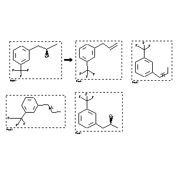

|  |
| FA | RX(1); FLST(1); RX(1) |
Reaction (1 of 1)
| Reaction ID | 2786144 |
| Reactant BRN | 4841793 |
| Reactant | (R)-3-(2-hydroxypropyl)trifluoromethylbenzene |
| Product BRN | 1103012; 6632365; 2209027; 6595586 |
| Product | 3-(m-Trifluormethyl-phenyl)-propen-(1); cis-1-[3-(trifluoromethyl)phenyl]propene; trans-b-Methyl-m-trifluormethyl-styrol; 2-chloro-1-[3-(trifluoromethyl)phenyl]propane |
| No. of Reaction Details | 1 |
Reaction Details (1 of 1)
| Reaction Classification | Preparation |
| Reagent | thionylchloride, pyridine |
| Time | 7.5 hour(s) |
| Other Conditions | Heating |
| Comment | Yield given. Yields of byproduct given |
| Citation Pointer | 5843665; Journal; Goument, B.; Duhamel, L.; Mauge, R.; BSCFAS; Bull.Soc.Chim.Fr.; FR; 130; 1993; 450-458; |
Reference (1 of 1)
| Citation Number | 5843665 |
| Document Type | Journal |
| Authors | Goument, B.; Duhamel, L.; Mauge, R. |
| CODEN | BSCFAS |
| Journal Title | Bull.Soc.Chim.Fr. |
| Language Code | FR |
| (Series) Volume | 130 |
| Publication Year | 1993 |
| Page | 450-458 |